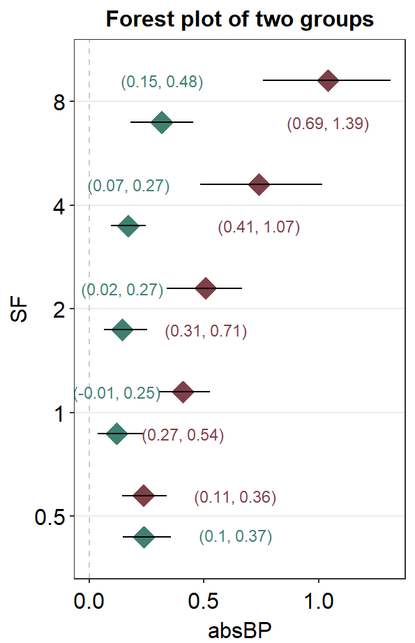

Chapter 7 Calculating Linear Slopes
In this chapter, we will use a fake data set that I have generated by eyeballing Figure 3 from this paper (PDF):
Yu Mao, Seung Hyun Min, Shijia Chen, Ling Gong, Hao Chen, Robert F. Hess, Jiawei Zhou. Binocular imbalance in amblyopia depends on spatial frequency in binocular combination. IOVS. 2020;61(8):7.
This data set contains both subject groups (Normal and Amblyopia) and conditions (Condition).
Let’s begin by loading the tidyverse and other libraries, and uploading the csv file amblyopia_random.csv using read_csv() from the tidyverse package.
It is always a good habit to make sure that the data set you intended to load uploads properly by using head(), which returns the first 6 rows of the data frame.
library(tidyverse)
library(smplot)
library(cowplot)
df <- read_csv('https://www.smin95.com/amblyopia_random.csv')
head(df)## # A tibble: 6 x 5
## Subject absBP SF Group Condition
## <chr> <dbl> <dbl> <chr> <chr>
## 1 A1 0.0747 0.5 Amblyopia One
## 2 A1 0.678 1 Amblyopia One
## 3 A1 0.868 2 Amblyopia One
## 4 A1 1.45 4 Amblyopia One
## 5 A1 0.868 8 Amblyopia One
## 6 A10 0.139 0.5 Amblyopia OneIn this dataset, there are five columns.
- First,
Subjectcolumn has all the subjects. People with amblyopia (a visual disorder) are labelled withA. First subject with amblyopia is written asA1. Normal subject is written withN; first normal subject isN1. We see that there are 10 subjects per group, so there are 20 subjects total.
unique(df$Subject)## [1] "A1" "A10" "A2" "A3" "A4" "A5" "A6" "A7" "A8" "A9" "N1" "N10" "N2"
## [14] "N3" "N4" "N5" "N6" "N7" "N8" "N9"Second,
absBPis the data of our interest.Third,
SFrefers to spatial frequency. We will be calculating slopes ofabsBPas a function ofSF. So these are our x-coordinates for slope calculations (see sections below). Each unit increases by a factor of 2, so it is also helpful to convert the values into log2 units.
length(unique(df$SF))## [1] 5df <- df %>% mutate(logSF = log2(SF))
head(df)## # A tibble: 6 x 6
## Subject absBP SF Group Condition logSF
## <chr> <dbl> <dbl> <chr> <chr> <dbl>
## 1 A1 0.0747 0.5 Amblyopia One -1
## 2 A1 0.678 1 Amblyopia One 0
## 3 A1 0.868 2 Amblyopia One 1
## 4 A1 1.45 4 Amblyopia One 2
## 5 A1 0.868 8 Amblyopia One 3
## 6 A10 0.139 0.5 Amblyopia One -1- Fourth,
Grouprefers to as the subject gruop. There are two groups:AmblyopiaandNormal.
unique(df$Group)## [1] "Amblyopia" "Normal"- Lastly,
Conditionrefers to the testing condition. In this dataset, there are two conditions.
unique(df$Condition)## [1] "One" "Two"The columns Group and Condition are categorical variable and must therefore be factors. head(df) shows that Group and Condition are <chr>, which mean characters. Lets change them to factors <fct>.
df$Group <- factor(df$Group)
df$Condition <- factor(df$Condition)
head(df)## # A tibble: 6 x 6
## Subject absBP SF Group Condition logSF
## <chr> <dbl> <dbl> <fct> <fct> <dbl>
## 1 A1 0.0747 0.5 Amblyopia One -1
## 2 A1 0.678 1 Amblyopia One 0
## 3 A1 0.868 2 Amblyopia One 1
## 4 A1 1.45 4 Amblyopia One 2
## 5 A1 0.868 8 Amblyopia One 3
## 6 A10 0.139 0.5 Amblyopia One -1We see that Group and Condition columns are now factor <fct>.
7.1 Linear relationship using lm()
Linear relationship between \(x\) and \(y\) can be described as \(y = mx + b\), where y is the dependent variable, x is the independent variable, m is the slope, and b is the y-intercept.
Let’s try calculate \(m\) and \(b\) using the data of A3, which is the 3rd amblyopic observer.
A3 <- df %>% filter(Subject == 'A3')There are two conditions here. Let’s filter for data from the second condition only (Condition == Two).
A3_second <- A3 %>% filter(Condition == 'Two')Now, we will use the function lm() to compute \(m\) (slope) and \(b\) (y-intercept).
In R, the relationship between \(y\) (dependent variable) and \(x\) (independent variable) is written as y~x using tilde (~). In other words, instead of directly writing \(y = mx + b\) in R, we use ~ to describe the relationship between \(y\) and \(x\). Let’s write the relationship between absBP (dependent variable) and logSF (independent variable) within the function lm().
lm(df$absBP ~ df$logSF)##
## Call:
## lm(formula = df$absBP ~ df$logSF)
##
## Coefficients:
## (Intercept) df$logSF
## 0.3205 0.1249This yields two main outputs. Let’s store this result using a new variable res, which is short for results.
res <- lm(A3_second$absBP ~ A3_second$logSF)
summary(res)##
## Call:
## lm(formula = A3_second$absBP ~ A3_second$logSF)
##
## Residuals:
## 1 2 3 4 5
## 0.1930 -0.1310 -0.1270 -0.1251 0.1900
##
## Coefficients:
## Estimate Std. Error t value Pr(>|t|)
## (Intercept) 0.30461 0.11058 2.755 0.07046 .
## A3_second$logSF 0.45815 0.06384 7.176 0.00557 **
## ---
## Signif. codes: 0 '***' 0.001 '**' 0.01 '*' 0.05 '.' 0.1 ' ' 1
##
## Residual standard error: 0.2019 on 3 degrees of freedom
## Multiple R-squared: 0.945, Adjusted R-squared: 0.9266
## F-statistic: 51.5 on 1 and 3 DF, p-value: 0.005574summary() is a function that prints all the outputs from a given model object. Here, the model object is res, which has been created using the lm() function. When using lm(), it is advisable to always store the results and print the results using summary(). For more information about summary(), please check out ?summary.
We see that the y-intercept \(b\) is 0.4582 under the column Estimate. We also see that the slope \(m\) is 0.3046 under the column Estimate. You can ignore all the other values for now.
Let’s visualize the data of A3 and fit a linear slope.
A3_second %>% ggplot(aes(x = logSF, y = absBP)) +
geom_point() +
geom_abline(slope = 0.4582, intercept = 0.3046)
Instead of writing the slope and intercept manually, we can subset these values using $.
res$coefficients## (Intercept) A3_second$logSF
## 0.3046126 0.4581507The first value is the intercept. Therefore use [[1]] to subset the intercept.
res$coefficients[[1]]## [1] 0.3046126You can also subset the slope using [[2]].
res$coefficients[[2]]## [1] 0.4581507Now let’s plot the graph again and label the y-intercept as well.
A separate data frame y_int containing the y-intercept is created below. The code below is a bit challenging, so please use ? to figure out each function if you are not sure.
y_int <- data.frame(logSF = 0, absBP = res$coefficients[[1]])
A3_second %>% ggplot(aes(x = logSF, y = absBP)) +
geom_point(size = 3) +
geom_abline(slope = res$coefficients[[2]],
intercept = res$coefficients[[1]]) +
geom_point(data = y_int, color = sm_color('red'), size = 3) +
sm_corr_theme() +
annotate('text', x = 0, y = 1.2, size = 3.5,
label = paste('Slope =',round(res$coefficients[[2]],2))) +
annotate('text', x = 0, y = 0.9, size = 3.5,
label = paste('Intercept =', round(res$coefficients[[1]],2)))
In summary, you can compute the slope of a linear function between \(y\) and \(x\) and using lm(), where you use ~ to describe the relationship. You also need to use $ to subset the slopes directly.
7.2 Calculating slopes of all subjects, groups and conditions
Now that we know how to compute slope for each subject, let’s calculate slopes of our entire dataset.
df## # A tibble: 200 x 6
## Subject absBP SF Group Condition logSF
## <chr> <dbl> <dbl> <fct> <fct> <dbl>
## 1 A1 0.0747 0.5 Amblyopia One -1
## 2 A1 0.678 1 Amblyopia One 0
## 3 A1 0.868 2 Amblyopia One 1
## 4 A1 1.45 4 Amblyopia One 2
## 5 A1 0.868 8 Amblyopia One 3
## 6 A10 0.139 0.5 Amblyopia One -1
## 7 A10 0.448 1 Amblyopia One 0
## 8 A10 0.667 2 Amblyopia One 1
## 9 A10 1.12 4 Amblyopia One 2
## 10 A10 1.70 8 Amblyopia One 3
## # ... with 190 more rowsWe see that there are 20 subjects total, each of which has completed two conditions. So there are 40 slopes to calculate! Does that mean we need to use lm() 40 times?
The answer is no. smplot has a function sm_slope_list() that returns a dataframe of slopes from linear regression. It works similarly to sm_auc_list().
data= this argument requires the variable that stores the data frame. In our case, it isdf.subjects= this argument requires the name of the column of the data frame that contains subjects. It must strings, ex.'Subject', notSubject.groups= this argument requires the name of the column of the data frame that contains each group. In this example, there is no group. An example would beGroupcolumn that contains two groups:NormalandAmblyopia.conditions= this argument requires name of the column of the data frame that contains each condition. In our example, the two conditions areOneandTwo.x= this argument requires the name of the column of the data frame that contains the x-axis points from which the AUC can be calculated. In our case, these are values from thelogSFcolumn ofdf. It must be strings, ex.'logSF', notlogSF. Also, it must be numeric/double, NOT factor. Make sure you check that the column is numeric. If its not, convert the column of the dataframe into double beforehand. ex.df$logSF <- as.numeric(df$logSF)ordf$SpatialFreq <- as.numeric(df$SpatialFreq).values= this argument requires the name of the column of the data frame that contains the actual data, which are the y-axis points from which the AUC can be calculated. In our case, it is the change in contrast balance ratio. It must strings, ex.'absBP', notabsBP.
Before using sm_slope_list(), you will need to check for a few things. First, check if the x column is numeric, not factor, by using is.numeric() function. If it is numeric, proceed with using sm_slope_list(). Second, see if the x levels (ex. 0, 3, 6, 12, 24 and 48 etc) are identical for each subject and condition (ex. no 7, 16, 29 minutes for subject 10).
# check if the x column is numeric
is.numeric(df$logSF) ## [1] TRUE# check if the x column is factor
is.factor(df$logSF)## [1] FALSE# if it is factor and not numeric:
df$logSF <- as.numeric(df$logSF)After checking, we can store the results from sm_slope_list() into a new variable. I will call the new variable slope_df.
slope_df <- sm_slope_list(subjects = 'Subject',
conditions = 'Condition',
groups = 'Group',
x = 'logSF', values = 'absBP',
data = df)## [1] "Slope = absBP ~ logSF"slope_df## Subject Condition Group Slope
## 2 A1 One Amblyopia 0.235667223
## 3 A1 Two Amblyopia 0.282800668
## 6 A10 One Amblyopia 0.380319905
## 7 A10 Two Amblyopia 0.456383886
## 10 A2 One Amblyopia 0.136716992
## 11 A2 Two Amblyopia 0.164060391
## 14 A3 One Amblyopia 0.381792237
## 15 A3 Two Amblyopia 0.458150685
## 18 A4 One Amblyopia 0.226928105
## 19 A4 Two Amblyopia 0.272313727
## 22 A5 One Amblyopia -0.015766219
## 23 A5 Two Amblyopia -0.018919463
## 26 A6 One Amblyopia 0.097918149
## 27 A6 Two Amblyopia 0.117501779
## 30 A7 One Amblyopia 0.217554761
## 31 A7 Two Amblyopia 0.261065713
## 34 A8 One Amblyopia 0.266574138
## 35 A8 Two Amblyopia 0.319888965
## 38 A9 One Amblyopia 0.198964218
## 39 A9 Two Amblyopia 0.238757061
## 43 N1 One Normal 0.080372285
## 44 N1 Two Normal 0.096446741
## 47 N10 One Normal -0.038881222
## 48 N10 Two Normal -0.046657466
## 51 N2 One Normal 0.071885539
## 52 N2 Two Normal 0.086262647
## 55 N3 One Normal 0.018219466
## 56 N3 Two Normal 0.021863359
## 59 N4 One Normal 0.004361030
## 60 N4 Two Normal 0.005233235
## 63 N5 One Normal 0.043098286
## 64 N5 Two Normal 0.051717943
## 67 N6 One Normal -0.066678839
## 68 N6 Two Normal -0.080014607
## 71 N7 One Normal 0.082798046
## 72 N7 Two Normal 0.099357656
## 75 N8 One Normal -0.049344920
## 76 N8 Two Normal -0.059213905
## 79 N9 One Normal -0.001135896
## 80 N9 Two Normal -0.001363075We see that the slope of A3 in Two condition is identical to the one we have obtained from the lm() function.
res$coefficients[[2]] ## [1] 0.4581507slope_df %>% filter(Subject == 'A3' & Condition == 'Two') %>%
select(Slope)## Slope
## 1 0.4581507Now we can plot all the slopes from One condition using sm_bar(), sm_boxplot etc. Let’s have a try.
The factor level of slope_df_one$Group is changed below so that bar plot of normal observer is plotted first, then amblyopia (rather than amblyopia -> normals as per alphabetical order).
slope_df_one <- slope_df %>% filter(Condition == 'One')
slope_df_one$Group <- factor(slope_df_one$Group,
levels = c('Normal','Amblyopia'))Here is a boxplot showing slope_df_one’s data.
slope_df_one %>% ggplot(mapping = aes(x = Group, y = Slope, color = Group)) +
sm_boxplot(alpha = 0.6) +
scale_color_manual(values = sm_palette(2)) +
ggtitle('Binocular imbalance')
Here is a bar graph showing slope_df’s data for One condition only. This figure is similar to Figure 3B in the paper (Mao et al., 2020).
slope_df_one %>% ggplot(aes(x = Group, y = Slope, fill = Group)) +
sm_bar(shape = 21, color = 'white',
bar_fill_color = 'gray80',
point_alpha = 1) +
scale_fill_manual(values = sm_palette(2)) +
ggtitle('Binocular imbalance')